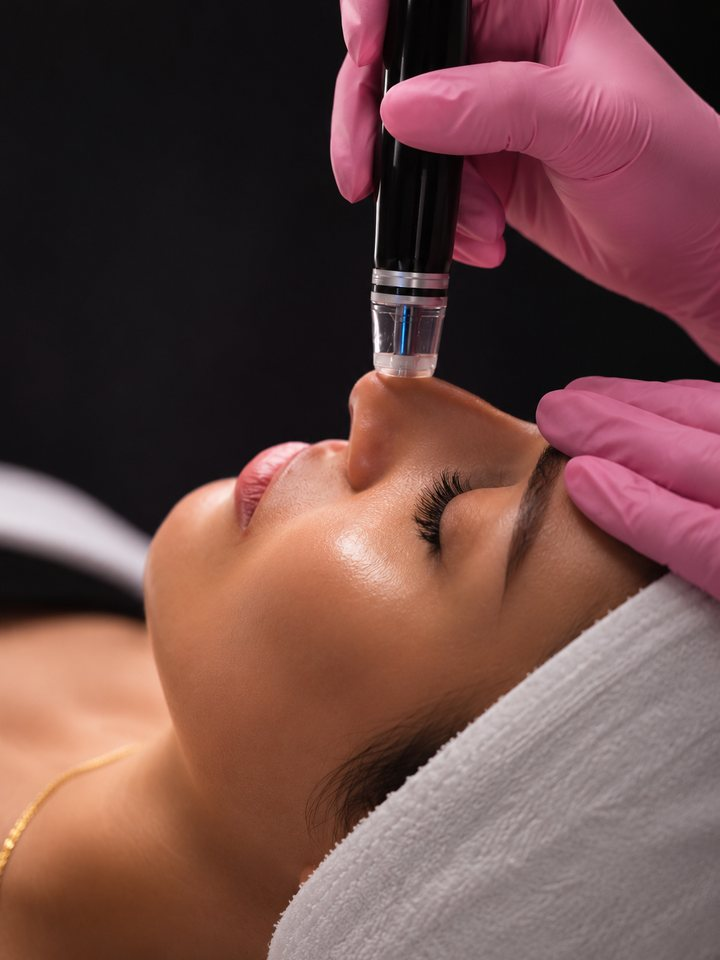

Aquafacial in Gaggenau
Glass Skin Aquafacial in Gaggenau
Das Aquafacial ist meine Lieblingsbehandlung für sofort sichtbaren Glow. Die Haut wird mit Wasserdruck tief gereinigt, sanft gepeelt und mit Feuchtigkeit versorgt. Du gehst mit klarer, frischer Haut nach Hause, ganz ohne Ausfallzeit.

Für wen?
- Verstopfte Poren und Mitesser
- Fahle, müde oder trockene Haut
- Vor einem Event oder Fotoshooting
- Als regelmäßige Pflege alle 4–6 Wochen
So läuft es ab
- HautcheckWir schauen, was deine Haut heute braucht.
- TiefenreinigungWasserdruck und Absaugung lösen Talg und Hautschüppchen.
- Peeling & WirkstoffeEnzympeeling oder Säure-Upgrade, danach Seren nach Hauttyp.
- Maske & AbschlussBeruhigende Maske und Pflege, du kannst direkt weiter.
Preise
Alle Preise inkl. MwSt. Termine und alle Leistungen online über Planity. Gutscheine im Studio oder über Planity.
Häufige Fragen
Ist das Aquafacial dasselbe wie ein Hydrafacial?
Es arbeitet nach einem ähnlichen Prinzip: Reinigung, Peeling und Feuchtigkeit mit Wasserdruck. Bei mir kombiniert mit einer Hautanalyse und Wirkstoffen nach deinem Hauttyp.
Wie oft sollte ich ein Aquafacial machen?
Für dauerhaft klare Haut alle 4–6 Wochen. Mit der 6er- oder 12er-Kur sparst du dir die Planung und bekommst Heimpflege dazu.
Kann ich danach Make-up tragen?
Am besten lässt du die Haut den Rest des Tages frei atmen. Am nächsten Tag ist alles wieder möglich.
Ist das auch für empfindliche Haut?
Ja. Dann wählen wir ein sanftes Enzympeeling oder das SensiPeel und beruhigende Wirkstoffe.
Duygu Beauty · Hauptstraße 22 · 76571 Gaggenau
Bereit für deinen Termin?
Aus Gernsbach, Kuppenheim, Rastatt und Baden-Baden bist du in rund 10–20 Minuten bei mir.